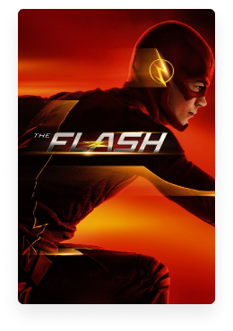
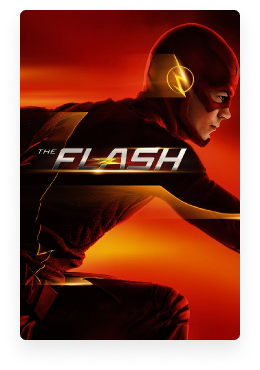

Track your shows automatically
With ShowTrackr you can track your favorite TV shows automatically, so you never loose track of your TV shows ever again. üçø
Compatible with


With ShowTrackr you can track your favorite TV shows automatically, so you never loose track of your TV shows ever again. üçø
ShowTrackr’s built-in machine learning and context-aware features guarantee that all the notifications and recommendations are always delivered to you in the perfect moment.
 Automated tracking
Automated tracking
 Machine learning
Machine learning
 Smart notifications
Smart notifications


 


Since most of our features work in a completely automated way, you will mainly use our apps to discover new TV shows recommended for you and discuss the most interesting episodes with like-minded people.
 Customized Dashboard
Customized Dashboard
 Automatic Day & Night Modes
Automatic Day & Night Modes
 Integrated Chat Platform
Integrated Chat Platform

Our goal is to create a product and service that you’re satisfied with and use it every day. This is why we’re constantly working on our services to make it better every day and really listen to what our users has to say.
Read more testimonials
In order to start tracking your TV shows, all you have to do is enter your email address. Everything else will be taken care of by us. All you have to do is sit back, relax and enjoy your TV shows.
Start tracking>